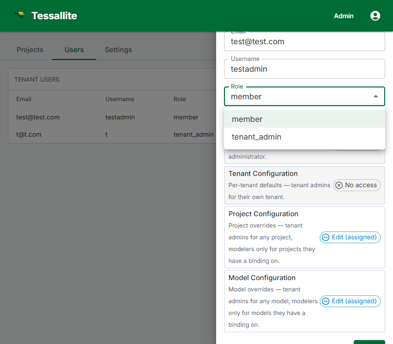

Manage Roles

What this covers
This article explains the four Tessallite roles, how to change a user's workspace role, the difference between workspace-level and project-level access, and how to assign project-level permissions.
Role overview
| Role | Scope | Who assigns it | What they can do |
|---|---|---|---|
| System Admin | Installation-wide | Defined by environment variables at deployment; not assignable via UI. | Create workspaces, manage all workspace users, access the System Administration screen. |
| Tenant Admin | Workspace-wide | System Admin (initial); Tenant Admin (additional) | Invite and remove users, assign roles, configure workspace settings. |
| Modeller | Workspace-wide (with per-project access) | Tenant Admin | Create and edit models, define dimensions and measures, configure aggregates and schedules, view diagnostics. |
| Analyst / Viewer | Per project | Tenant Admin or Modeller (via project settings) | Connect BI tools via JDBC or XMLA, run queries, view query results. |
Role capabilities reference
| Action | System Admin | Tenant Admin | Modeller | Analyst |
|---|---|---|---|---|
| Create workspaces | Yes | No | No | No |
| Manage workspace users | No | Yes | No | No |
| Configure workspace settings | No | Yes | No | No |
| Create / edit models | No | No | Yes | No |
| Configure aggregates | No | No | Yes | No |
| Connect BI tools | No | No | Yes | Yes |
| Run queries | No | No | Yes | Yes |
Changing a user's workspace role
- In the workspace sidebar, click Admin.
- Click the Users tab.
- Click the user's name to open their detail panel.
- In the Role dropdown, select the new role.
- Click Save.
The change takes effect on the user's next sign-in. Existing active sessions continue with the old role until the user signs out and signs back in.
Workspace-level vs. project-level access
The Tenant Admin and Modeller roles are workspace-wide. A user with the Modeller role has modelling access across all projects in the workspace unless further restricted at the project level.
Analyst access is managed per project. A user with the Analyst role at the workspace level has no project access by default — they must be explicitly added to each project.
Assigning project-level access
- Open the project in Model Builder.
- Click Settings in the project toolbar.
- Click the Access tab.
- Click Add User, enter the user's email, and select their project-level permission: Viewer or Modeller.
- Click Save.
A user's workspace role is the ceiling for their effective permissions. A Modeller cannot be granted Tenant Admin access at the project level. If a user needs a higher workspace role, change it from the Admin panel first.